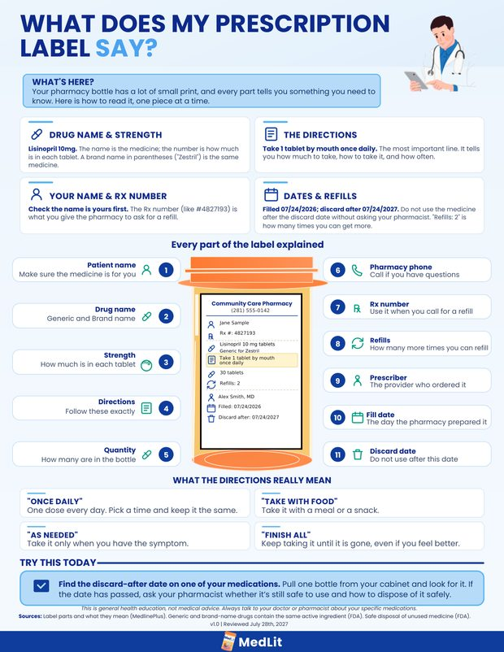
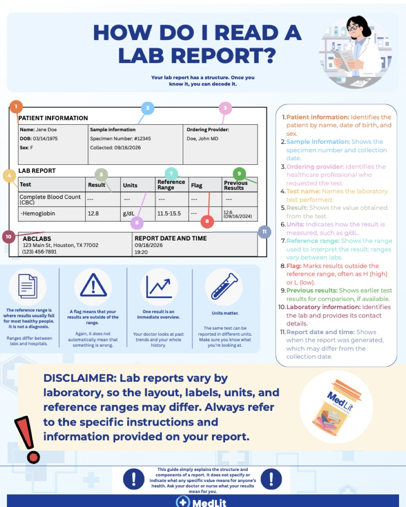

Understanding your own health shouldn’t be a privilege.
MedLit is a student-led nonprofit that makes health information understandable. We take the documents people are handed at the pharmacy, the lab, and the insurance office, and put them in plain language through free workshops and free plain-language guides, in English, Spanish, Vietnamese, Turkish, and Persian.
See what we doOur why
You get handed a prescription label, a lab result, an insurance letter. The print is small and the words are hard to understand. The person who could explain it has already moved on to the next patient.
So you guess. And guessing about your own health is a risk no one should have to take.
-
75 million
U.S. adults have basic or below-basic health literacy.
-
1 in 8
Only about 1 in 8 U.S. adults have proficient health literacy.
-
1 in 2
Nearly half of patients misread at least one instruction on common prescription labels. Even among strong readers, more than 1 in 3 did.
What we do
We take the documents you get handed at the pharmacy, the lab, and the insurance office. We put them in plain language. Two ways: in a room, and on one page.
-
Free workshops
45 minutes, interactive, at senior communities, libraries, and food pantries. We bring the materials and the facilitators. You bring the room and the people.
-
Free guides
One page each, in English, Spanish, Vietnamese, Turkish, and Persian. Read them on your phone, print them, hand them out at the front desk.
-
Free. Always.
No fee, no trial, no first-one-free. There is no version of this that costs money, for the workshops or for the guides.
Our impact
-
160
Guides handed out
90
In English
70
In Spanish
At Cy-Fair Helping Hands
-
18
Guides handed out
8
In English
5
In Spanish
2
In Turkish
3
In Persian
At Abbas House
-
40
Guides handed out
22
In English
18
In Spanish
At MESA outreach
-
220
Guides handed out
120
In English
100
In Spanish
At Cy-Fair Helping Hands
Free to read, print, and hand out.
No sign-up. No email address. No catch.
-

What Does My Prescription Label Say?
Every part of a prescription label, explained one piece at a time. Drug name, dose, directions, refills, dates.
- Format
- PDF, 1 page
- Reviewed
- Licensed healthcare professional
Download it in
-

How Do I Read a Lab Report?
Your lab report has a structure. Patient details, test name, result, units, reference range, flags — one piece at a time.
- Format
- PDF, 1 page
- Reviewed
- Licensed healthcare professional
Download it in
Our partners
Where to find our guides.
We do not hand guides out on our own. These are the pantries, the outreach centers and the senior programs that put them in front of the people who need them.
-
5
Partner organizations
-
438
Guides handed out through them
-
4
Languages handed out so far
-
Cy-Fair Helping Hands
Houston, TX
Food pantry and emergency assistance
-
MESA Outreach
Houston, TX
Food pantry and community outreach
-
Abba’s House
Houston, TX
Refugee and newcomer services
-
Tomball Emergency Assistance Ministries
Tomball, TX
Food pantry and emergency assistance — TEAM
-
Fort Bend Seniors Meals on Wheels
Rosenberg, TX
Senior meals and senior centers
If you run a pantry, a clinic waiting room, a library or a senior center, we will send you guides to put on your front desk. Free, printed or as files you print yourself.
Become a partner medliterateofficial@gmail.com
What people are saying.
-
“The MedLit students are providing our clients with useful and valuable health education and we look forward to their returning to Cy-Fair Helping Hands.”
Janet Ryan Executive Director, Cy-Fair Helping Hands
So we teach people to read them.
45-minute interactive sessions at senior communities, libraries, and food pantries, covering how to read prescription labels, lab results, and insurance letters.
- How long
- 45 minutes, interactive.
- Where
- Senior communities, libraries, food pantries, community organizations.
- What we cover
- Prescription labels, lab results, insurance letters.
- What we bring
- The materials and the facilitators.
- What you bring
- The room and the people.
- Cost
- Free. Always.
We check the work, and we measure it.
-
Reviewed before release
One-page plain-language guides in English, Spanish, and Vietnamese, each reviewed by a licensed healthcare professional before release.
-
Measured every session
We test comprehension before and after every workshop, so we can show people actually learned something.
Bring a free workshop to your space.
If you run a senior community, a library, or a community organization, we would love to visit. We handle the materials and the facilitators. You bring the room and the people. Tell us a little about your group and we’ll follow up with dates.
Email us about hosting medliterateofficial@gmail.com
We’re looking for our first volunteers.
People to run workshops, write guides, and translate them. If you can explain things clearly, or you speak a second language, there is a place for you here.
- Run workshops
- Teach a 45-minute session.
- Write guides
- Turn one confusing document into one clear page.
- Translate
- Carry a guide into another language.